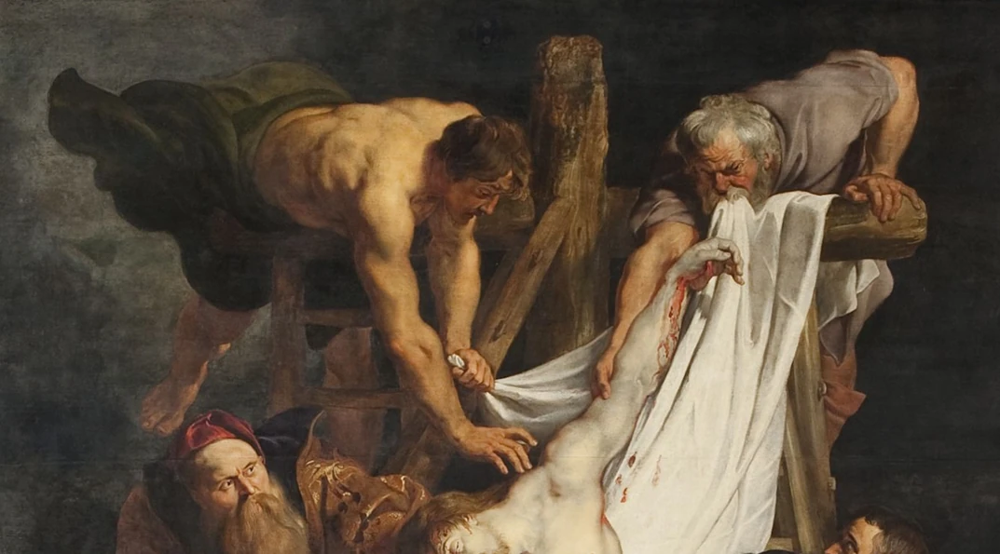
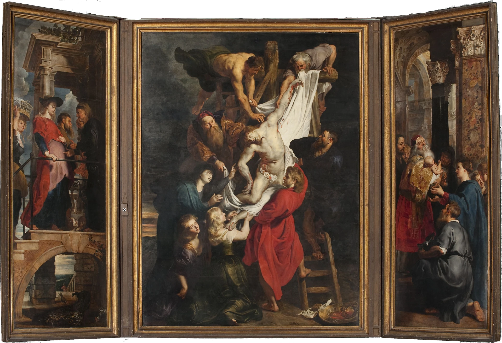
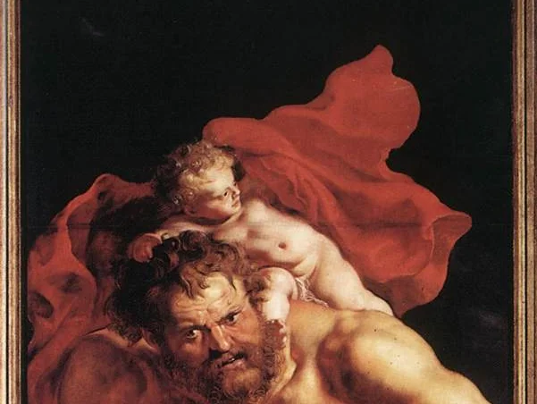
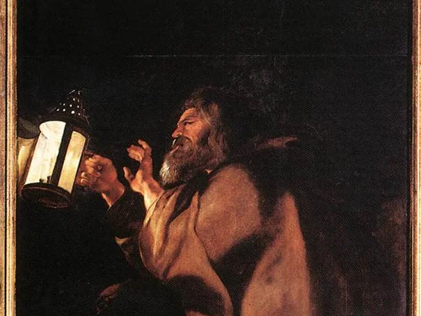
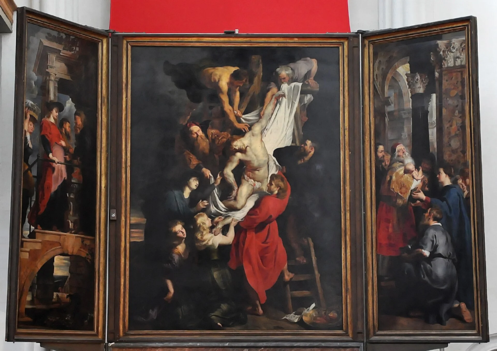
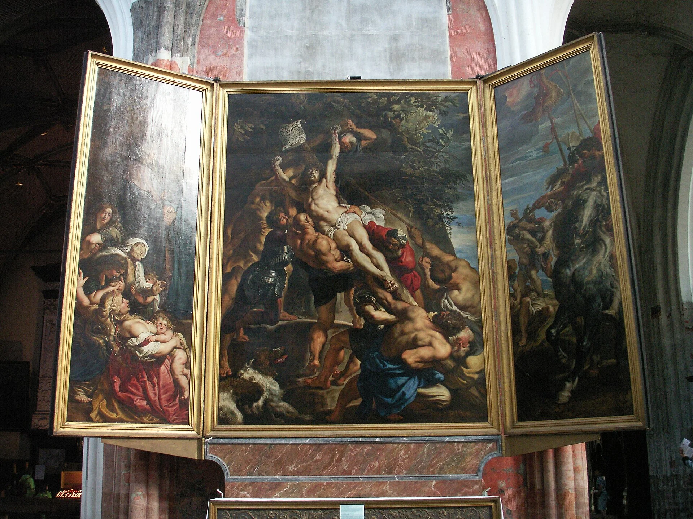

아직 펼치지 않은 카드가장 긴 한 주 · 3십자가에서 내려지심축 늘어진 몸을, 사람들은 어떻게 내리고 있을까요?사람들이 예수님을 조심조심 내리고 있어. 어떻게 하고 있을까?
1611~1614년벨기에 안트베르펜 · 성모 대성당
십자가에서 내려지심
1611년, 벨기에 안트베르펜의 화승총 조합이 화가 루벤스에게 대성당 제단화(제단 뒤에 세우는 큰 그림)를 맡겼어요. 조합의 수호성인(모임을 지켜 준다고 믿은 성인) 크리스토포로스의 이름은 ‘그리스도를 나르는 사람’이라는 뜻이에요. 그림 속에서 예수를 받치고, 품고, 안은 손을 하나씩 찾아보세요.
여러 사람이 힘을 모아 예수님의 몸을 조심조심 내리고 있어. 누가 어디를 받치고 있는지 같이 찾아볼까?
검수 전 시안이에요(기준서 1판). 장면에는 대성당 공식 누리집과 미술관·성당 그림 해설, 백과사전에 있는 것만 옮겼어요. 그림 속 인물 이름은 해설이 붙인 대로 적었어요. 상상은 ‘눈 감고 상상해 보기’에만 썼어요.
시안 확인용카드 단계 미리 보기
1
닫힌 날개
1611년 9월 7일, 안트베르펜(Antwerpen)의 화승총 조합이 루벤스(Peter Paul Rubens)에게 대성당 제단화를 맡겼어요. 화승총 조합은 총을 들고 도시를 지키던 시민들의 모임이에요.
조합이 섬기던 수호성인은 크리스토포로스예요. 이 제단화는 가운데 그림 양쪽에 문짝처럼 여닫는 날개가 달린 세 폭 그림이에요. 날개를 닫으면 두 날개가 한 장면이 돼요. 거인 크리스토포로스가 아기 예수를 어깨에 업고 물을 건너고, 맞은편 바위 위에서는 은수자(홀로 숨어 기도하며 사는 수도자)가 등불을 들어 비춰요.


크리스토포로스라는 이름은 그리스 말로 ‘그리스도를 나르는 사람’이라는 뜻이에요. 조합은 행렬 때 긴 나무다리를 탄 사람에게 거인 성인 역을 맡기고, 그 앞에 등불 든 은수자를 세웠어요. 사람들이 즐겨 보던 볼거리였대요.
커다란 거인이 아기 예수님을 어깨에 업고 물을 건너고 있어.
물어보기등불 든 할아버지는 누구를 비춰 주고 있을까?
2
흰 천 위로
날개를 열면 세 장면이 나란히 나와요. 가운데는 따르던 사람들이 예수의 몸을 십자가에서 내려, 무덤으로 옮기려는 장면이에요.
복음서(예수의 이야기를 적은 성경의 네 책)는 아리마대라는 마을 사람 요셉이, 예수에게 사형을 내린 로마 총독 빌라도에게 예수의 몸을 달라고 청했다고 적어요. 니고데모도 와서, 두 사람이 몸을 향품(몸에 바르는 향료)과 함께 고운 베(곱게 짠 천)로 쌌어요(요한복음 19장 38~40절).
그림 속 숫자를 하나씩 눌러 보세요. ‘가까이 보기’를 누르면 그 자리를 크게 볼 수 있어요.
루벤스, 「십자가에서 내려지심」, 1611~1614년 · 안트베르펜 성모 대성당 · 루벤스 그림 · 퍼블릭 도메인 · 위키미디어 공용
그림 위의 숫자나 아래 번호를 눌러 보세요.
일곱 곳을 모두 찾았어요. 가운데에서도 양쪽 날개에서도, 누군가 예수를 받치고 품고 안고 있어요.
여러 사람이 함께 몸을 내리고 있어요. 나라면 어느 자리에서 함께 받칠까요?
흰 천을 타고 몸이 천천히 내려와. 여러 사람이 함께 받치고 있어.
물어보기너라면 어디를 붙잡아 줄래?
3
세 폭에 숨은 이름
이 제단화의 주제는 조합이 골랐어요. 수호성인 크리스토포로스, 곧 ‘그리스도를 나르는 사람’과 이어진 주제예요. 그래서 날개를 열어도 세 장면 모두에서 누군가 예수를 나르고 있어요.
왼쪽에서는 마리아가 배 속에 예수를 품고 나이 많은 사촌 엘리사벳을 찾아가요. 가운데에서는 사람들이 예수의 몸을 받쳐 내리고, 오른쪽에서는 예루살렘 성전(유대 사람들이 하나님께 제사를 드리던 곳)의 노인 시므온이 아기 예수를 안아 들어요.

루벤스는 그림을 맡긴 조합의 대표 니콜라스 로콕스(Nicolaas Rockox)도 그려 넣었어요. 오른쪽 날개의 왼쪽 끝에서, 검은 머리에 검은 수염을 하고 이 장면을 지켜보는 사람이에요. 로콕스는 루벤스의 친구이자 후원자였어요.
세 그림 모두 누군가 예수님을 안거나 품고 있어.
물어보기누가 누가 예수님을 안고 있는지 찾아볼까?
4
같은 성당의 두 십자가
같은 대성당에는 루벤스가 1610~1611년에 그린 「십자가 세우심」도 걸려 있어요. 아홉 사람이 온 힘을 다해, 예수가 못 박힌 십자가를 일으켜 세워요.
「십자가에서 내려지심」에서는 여러 손이 그 몸을 조심스럽게 받아 내려요. 루벤스의 집 미술관 관장 베르트 바테이우(Bert Watteeuw)는 이 그림이 무게, 그리고 그리스도를 나르는 일을 깊이 생각한 그림이라고 말해요.

날개를 닫으면 처음에 본 거인이 다시 나타나요. 아기 예수를 어깨에 업고, 무거운 듯 얼굴을 찡그리며 물을 건너요. 날개 안에서는 그 무게를 여러 손이 흰 천으로 함께 받아 내렸어요.
이번엔 사람들이 다 같이 힘을 모아 십자가를 세우고 있어.
물어보기세우는 그림과 내리는 그림, 사람들 몸짓이 어떻게 달라?
눈 감고 상상해 보기
대성당 안이 조용해요. 촛불 냄새가 희미하게 나요. 닫혀 있던 커다란 날개가 천천히 열리고, 어두운 하늘 아래 흰 천이 환하게 드러나요. 사다리 위에서, 아래에서, 여러 손이 한 사람의 몸을 조심스럽게 받아 내려요.
눈을 감아 봐. 커다란 문이 스르르 열려. 하얀 천이 반짝 보여.
나의 자리
무거운 짐을 진 누군가를 위해, 나는 어느 자리에서 천을 붙잡을 수 있을까요?
친구가 무거운 짐을 들고 있으면, 그림 속 사람들처럼 나는 어디를 같이 들어 줄까?
마음에 닿는 한 줄을 고르거나 직접 써 보세요. 한 줄을 남기면 이 자리의 도장이 찍혀요. 이 기기에만 저장돼요.
더 깊이
이야기를 보다 궁금해질 만한 것들이에요. 답을 읽거나 짧은 영화로 보세요.
거인은 아기 하나 업고 왜 저렇게 힘들어해요?
『플랜더스의 개』의 넬로가 보고 싶어 한 그림이 이거예요?
뒷이야기
아직 펼치지 않은 이야기예요. 누르면 이야기가 펼쳐지고 색이 돌아와요. 더 알고 싶으면 근거를 따라가 보세요.
다 펼치면, 다음에 오실 때 새 이야기가 찾아와요.
오늘의 뒷이야기는 여기까지예요. 다음에 오시면 새 이야기가 기다리고 있어요.
펼친 뒷이야기 · 누르면 다시 볼 수 있어요
더 찾아보기
기록마다 다른 점
돌아온 해 파리에서 돌아온 해를 위키백과는 1815년, 대성당 그림 해설(토파)은 1816년으로 적어요.
「십자가 세우심」을 그린 해 대성당 누리집은 1609~1610년, 위키백과는 1610~1611년이라고 적어요.
그림 속 이름 그림에는 이름이 적혀 있지 않아요. 요셉·니고데모·요한·두 마리아는 해설이 복음서를 따라 붙인 이름이에요.
그림과 함께 읽는 말씀
그리스도인들은 이 세 장면을 복음서의 기록으로 읽어요. 본문은 뜻만 옮기고, 대한성서공회 개역개정으로 이어 드려요.
요한복음 19장 38~42절 아리마대 사람 요셉이 빌라도의 허락을 받아 예수의 몸을 가져가요. 니고데모가 몰약과 침향을 가져오고, 두 사람은 몸을 고운 베로 싸서 가까운 동산의 새 무덤에 모셔요.
누가복음 1장 39~45절 예수를 밴 마리아가 엘리사벳을 찾아가요. 마리아의 인사를 듣자 엘리사벳의 배 속 아기가 뛰놀아요.
누가복음 2장 25~32절 성전에서 시므온이 아기 예수를 팔에 안고 하나님을 찬양해요.
직접 가 보기
확인한 날 · 2026년 11월 18일 · 바뀌기 쉬운 정보라 정기적으로 다시 확인해요
벨기에 안트베르펜 성모 대성당에서 봐요. 평일 오전 10시~오후 5시, 토요일 오전 10시~오후 3시, 일요일 오후 1~5시에 열어요.
1월 1일만 닫지만, 날에 따라 관광 관람을 받지 않기도 해요(예: 2026년 12월 20일). 가기 전에 누리집을 한 번 더 봐 주세요.
입장료는 어른 12유로예요. 60세 이상·학생 등은 10유로, 18세 미만은 무료예요.
받치는 손 일곱 곳 금박
그림 속 일곱 곳을 모두 찾아 읽으면 카드에 금박이 입혀져요.
그림 속 일곱 곳을 모두 찾아 읽기
나라면 어느 자리에 채색
둘 가운데 하나만 해도 카드가 채색돼요.
그림 속에서 내가 함께 받칠 자리 고르기
아이와 함께 ‘영화처럼 보기’를 끝까지 보기
근거 보기 (15)
- 안트베르펜 성모 대성당 공식 누리집: 「십자가에서 내려지심」 — 1611~1614년, 바깥 두 날개에 걸친 크리스토포로스 한 장면(이름 뜻 ‘그리스도를 나르는 사람’), 가운데 = 몸을 십자가에서 내려 무덤으로 옮김, 왼쪽 = 예수를 밴 마리아가 나이 많은 사촌 엘리사벳을 찾아감, 오른쪽 = 성전에 바침, 크기
- 대성당 공식 누리집: 루벤스 네 점 — 「십자가에서 내려지심」과 「성모 승천」은 이 건물을 위해 그려 지금도 이곳에 있음
- 대성당 공식 누리집: 「십자가 세우심」 — 1609~1610년
- 대성당 공식 누리집: 방문 — 평일 10~17시·토 10~15시·일 13~17시, 1월 1일만 닫음, 2026년 12월 20일 관광 관람 없음, 어른 12유로·할인 10유로·18세 미만 무료
- 위키백과(길잡이): The Descent from the Cross (Rubens, 1612–1614) — 1611년 9월 7일 화승총 조합의 주문, 수호성인 크리스토포로스, 붉은 옷의 요한(사다리에 한 발, 무게를 가장 많이 받음), 요셉과 니고데모, 가로대 위 두 사람(한 사람은 천을 이로 묾), 막달라 마리아와 글로바의 마리아, 하얗게 질린 성모, 바깥 날개(물을 건너는 크리스토포로스와 은수자), 1794년 루브르·1815년 돌아옴
- 위키백과(길잡이): The Elevation of the Cross (Rubens) — 1610~1611년 성 발부르가 교회 큰 제단, 아홉 사람이 못 박힌 예수와 십자가를 세움, 1794년 파리·1815년, 교회가 헐린 뒤 대성당으로
- 스마트히스토리(베르트 바테이우·스티븐 주커): 팔을 쓰려고 천을 이로 묾, 되도록 부드럽게 수의로, 흰 천에 몸을 내림, 무게와 그리스도를 나르는 일에 대한 묵상, 왼쪽 날개 마리아가 배에 얹은 왼손, 시므온, 로콕스, 아기를 업은 크리스토포로스와 등불 든 은수자, 크기
- 토파(TOPA) 대성당 그림 해설: 로콕스(루벤스의 ‘친구이자 후원자’), 1612년 9월 12일 가운데 그림·두 해 뒤 날개, 등불이 아기 예수를 비춤, 세 장면 모두 그리스도를 나름, 행렬의 키다리 거인과 등불 든 은수자, 1794년 파리·1816년 돌아옴, 원래 제단은 없어짐, 지금 성당 남쪽(처음 자리에서 몇 걸음)
- 브리태니커: 조합 대표 로콕스가 오른쪽 날개 왼쪽 끝에 그려짐, 크리스토포로스 = 그리스 말로 ‘그리스도를 나르는 사람’
- 코톨드 미술관: 화승총 조합은 도시를 지키던 시민 경비대의 하나(화승총은 총의 한 가지)
- 구글 아트 앤 컬처(코톨드 미술관 밑그림): 제단화 주제는 조합이 골랐고, 수호성인 크리스토포로스와 이어짐
- 『황금 전설』 100장 크리스토포로스(야코부스 데 보라기네, 캑스턴 영역 1483 · Christian Iconography) — 가장 큰 임금을 섬기려던 거인, 강가에서 사람들을 건네주라고 일러 준 은수자, 납처럼 무거운 아이, 온 세상과 세상을 지은 이, 꽃 핀 지팡이
- 런던 내셔널 갤러리 용어 풀이: St Christopher — ‘그리스도를 나르는 사람’, 『황금 전설』의 강과 무거운 아이, 세상의 무게
- 위다 『플랜더스의 개』(1872 · 프로젝트 구텐베르크) — 성가대석 양쪽의 덮인 두 그림, 가난해서 돈을 내고 볼 수 없음, 달빛에 드러난 「십자가 세우심」과 「십자가에서 내려지심」, 다음 날 함께 발견됨
- 토파(TOPA) 대성당 그림 해설(더 읽은 곳) — 크리스토포로스는 전설로 밝혀짐, 가톨릭 개혁이 연 제단화에 십자가의 희생을 요구해 전설은 바깥 날개로, 천을 이로 문 오른쪽 위 사람, 파란 옷 사람이 가시관을 벗기고 못 셋을 뽑음, 접시의 가시관·못·피와 돌을 얹은 명패, 발을 어깨에 얹은 막달라 마리아, 깨끗한 흰 수의(마태복음 27장 59절), 1612년 9월 12일과 십자가 현양 축일, 검은 머리·수염의 로콕스
그림·사진·소리 출처
- 루벤스 그림 · 퍼블릭 도메인 · 위키미디어 공용
- 루벤스 그림 · 퍼블릭 도메인 · 위키미디어 공용
- 루벤스 그림 · 퍼블릭 도메인 · 위키미디어 공용
- 루벤스 그림 · 퍼블릭 도메인 · 위키미디어 공용
- 루벤스 그림 · 퍼블릭 도메인(사진: Paul Hermans) · 위키미디어 공용
- 사진: Welleschik(2006) · CC BY-SA 2.5 · 위키미디어 공용
- 루벤스 그림 · 퍼블릭 도메인 · 위키미디어 공용
- 루벤스 그림 · 퍼블릭 도메인 · 위키미디어 공용
- 루벤스 그림 · 퍼블릭 도메인 · 위키미디어 공용
- 루벤스 그림 · 퍼블릭 도메인 · 위키미디어 공용
- 루벤스 그림 · 퍼블릭 도메인 · 위키미디어 공용
- 루벤스 그림 · 퍼블릭 도메인 · 위키미디어 공용
- 루벤스 그림 · 퍼블릭 도메인 · 위키미디어 공용
‘처음 만나는 기독교 문화’의 깊은 카드예요. 카드 단계와 남긴 글은 이 기기에만 저장돼요.